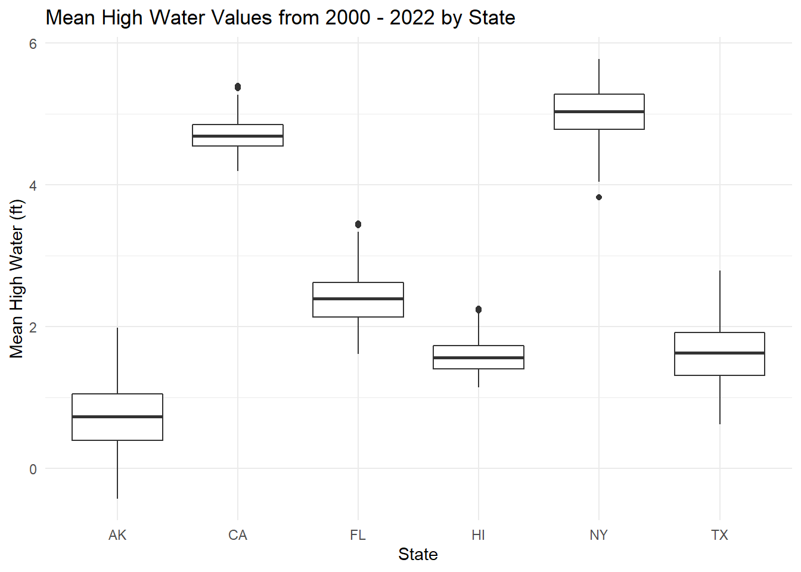
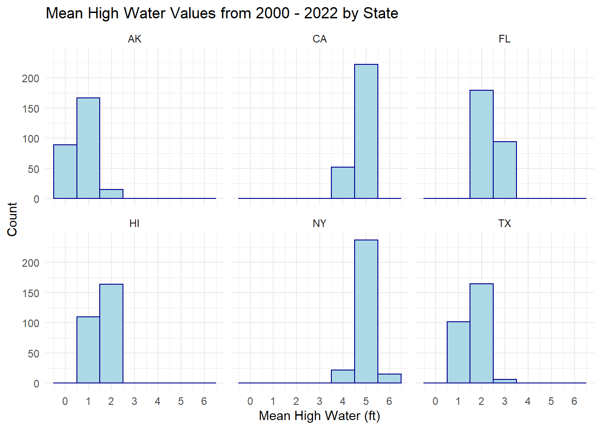
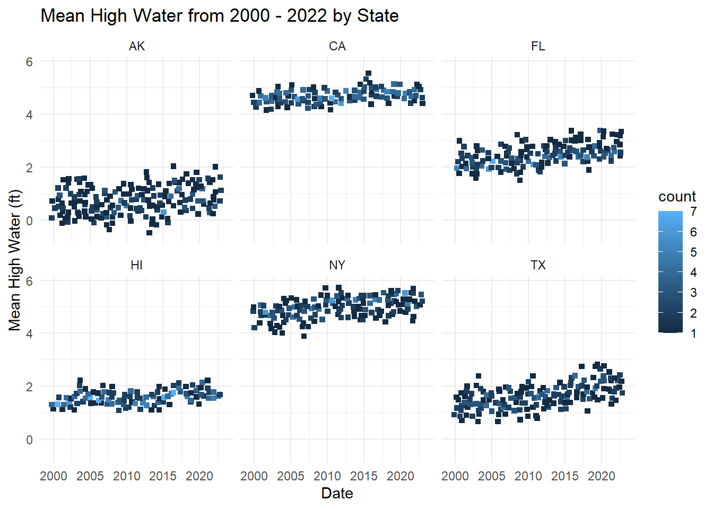
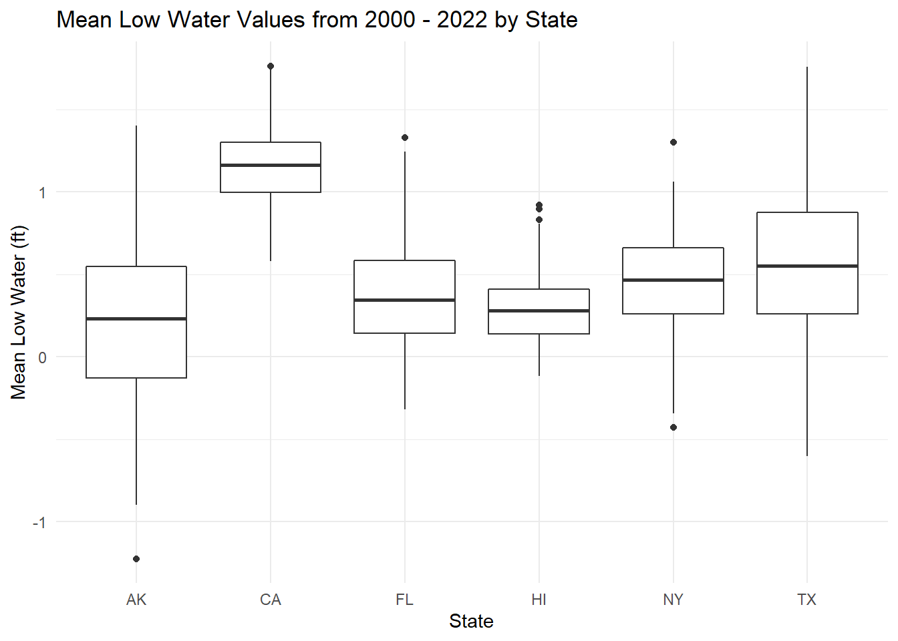
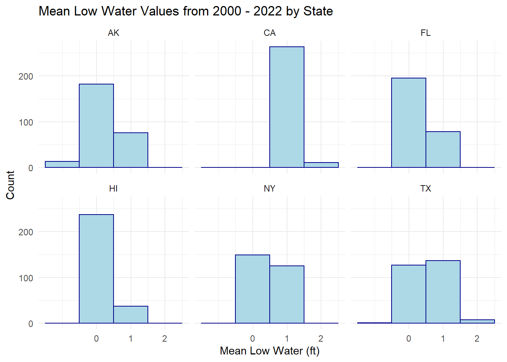
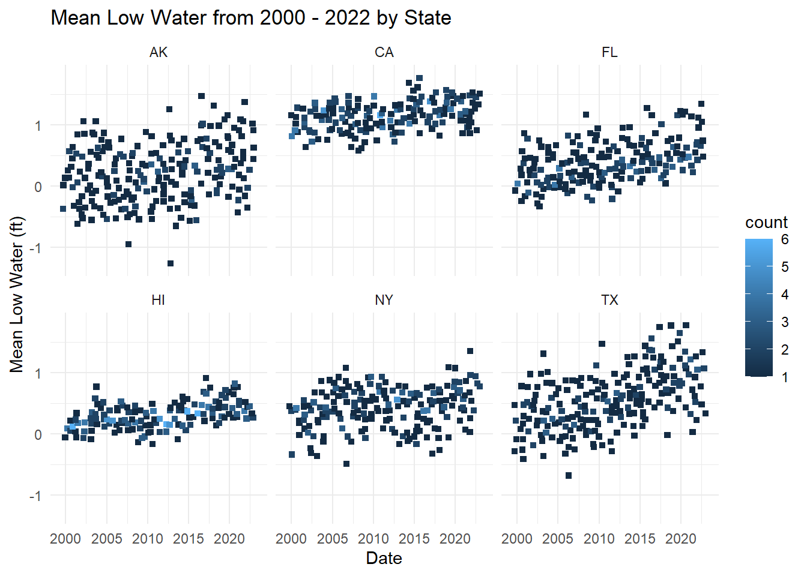
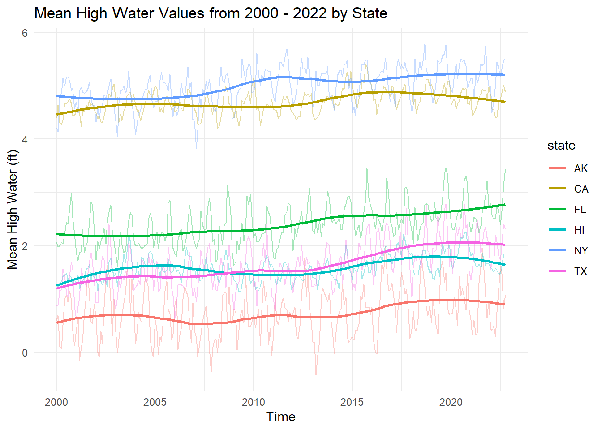
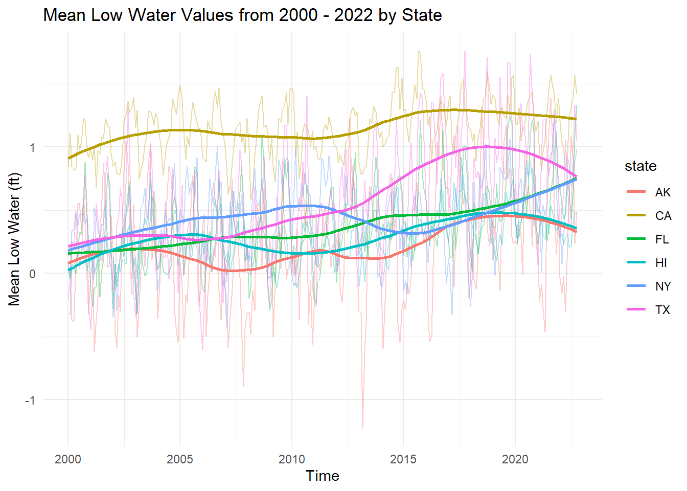

Chapter 4 Results
4.1 Mean High Water (ft)

Throughout the course of about 23 years, the National Oceanic and Atmospheric Administration (NOAA) has been collecting and recording the mean high water levels, measured in feet, for each of the stations around the United States. In the above graph, we can see all of the averages for each of the high water heights per month per station. By looking at these graphs, we can see that Alaska has the lowest overall, regardless of the time of the year or the trend. On the other hand, we can also see that California and New York have similar median water levels. However, it is important to note that New York has more variability and a higher H-spread.

Looking at the mean high water for each station as a histogram, we can see how often each station hits specific water levels and if they ever go above or below a specific value. In the above graph, we can see the number of months it reaches a certain foot above sea level. Similar to the box plot, we see that Alaska is the lowest, staying between 0 and 1 feet above sea level. Additionally, this graph solidifies the notion that California and New York have the highest mean high water level across all stations. However, in the histogram, we see that both stations are in the 5ft mark for about the same amount of time, which was not easily seen in the box plot.

When initially plotting the heat map for mean high water level, there was a lot of overplotting of data points, making it considerably hard to read the graphs, so we decided to jitter the points to make the chart look neater and easier to interpret.
Based on the chart above, we can see that Alaska, Florida, New York, and Texas all have a similar spread width and variability, despite being at different mean high water levels. However, California and Hawaii have small amounts of variability month to month and roughly stay around the same mean high water level, hitting the same value multiple times, as shown with more lighter blue boxes.
4.2 Mean Low Water (MLW)

Compared to the mean high water level graph, we can see major differences. For the mean high water, there was a greater variability between each of the stations, but when we looks at the mean low water levels, each station has a median value of around 0.25-0.5 feet, with California being an exception. California has a similar H-spread to Hawaii, but 50% of the data stays about 1 foot. You can also notice that Texas has a very large spread, with no outliers. Due to this, we can assume that Texas water levels have larger changes.

Based on the above chart, we can see that Alaska has a few months where the mean low water level went below sea level, but it usually remained between 0 and 1 feet above water level. Additionally, we can see that Texas and Florida spent most months in the 0 to 1 foot water level mark whereas New York and Texas fluctuated between 0 to 2 feet above sea level the most. Compared to the bar chart, the graph above shows that Texas spent a few months at or above 2 feet above mean low water level, which was hard to notice from the bar chart.

Similar to the mean high water heatmap, we jittered the points to help minimize overplotting and be able to really see where the observations are lying.
By looking at the heat map for each station, we can see that Alaska and Texas have the highest variabilities in mean low water level measurements. Additionally, we can see that most stations rarely hit the same exact level more than a couple times, which helps confirm the variability by month of the data set.
4.3 Time Series
4.3.1 Mean High Water

While looking at the above graph, we can see that California and New York consistently have the highest mean high water levels from the past 23 years, with New York slightly higher on average. However, all 6 stations have the same trend with large variability when looking at individual observations, but a steady and slight increase each year. When looking at the individual observations, it is hard to notice the upward trends, but when it is blended and more transparent (lower alpha), you can really see the positive trends overall.
4.3.2 Mean Low Water

As mentioned and presented in previous charts, we can see that California has the largest overall mean low water levels throughout the past 23 years, starting just below 1 foot above sea level and increasing over time to be consistently above 1 foot. Alternatively, the other 5 stations start in 2000 just over 1 foot above sea level and slowly increase until around 2010, when each of the 5 stations start to take their own path. The station with the highest variability is Texas, which has increased and decreased the most over the past 10 years, which can be confirmed in the bar chart above.